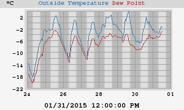
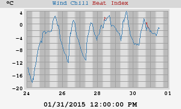
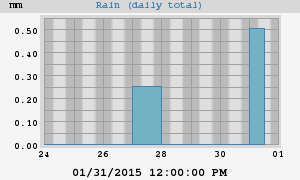
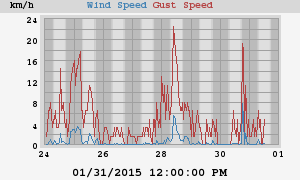
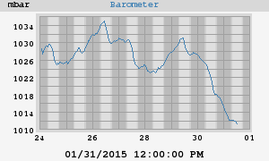
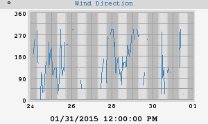
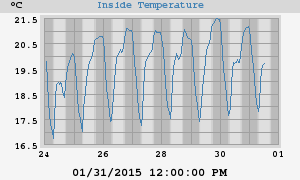
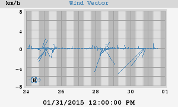
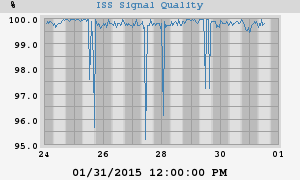

Weekly Statistics and Plots









|
High Temperature Low Temperature |
4.4°C at 02:00:00 PM (Thursday) -12.4°C at 07:55:00 AM (Monday) |
| High Heat Index | 4.4°C at 02:00:00 PM (Thursday) |
| Low Wind Chill | -12.4°C at 07:55:00 AM (Monday) |
|
High Humidity Low Humidity |
95% 03:45:00 AM (Monday) 45% 03:22:43 PM (Thursday) |
|
High Dewpoint Low Dewpoint |
-2.3°C 12:19:23 PM (Saturday) -13.7°C 07:55:00 AM (Monday) |
|
High Barometer Low Barometer |
1035.2 mbar at 10:15:00 AM (Monday) 1010.6 mbar at 12:32:03 PM (Saturday) |
| Rain Total | 0.8 mm |
| High Rain Rate | 0.0 mm/hr at 12:05:00 AM (Sunday) |
| High Wind Speed | 23 km/h from 68° at 09:50:00 AM (Wednesday) |
| Average Wind | 1 km/h |
| RMS Wind | 1 km/h |
|
Vector Average Speed Vector Average Direction |
1 km/h 118° |
|
High Inside Temperature Low Inside Temperature |
21.5°C at 07:18:01 PM (Thursday) 16.9°C at 06:45:00 AM (Sunday) |
|
High Temperature Low Temperature |
4.4°C at 01/29/2015 02:00:00 PM -25.9°C at 01/22/2015 07:53:14 AM |
| High Heat Index | 4.4°C at 01/29/2015 02:00:00 PM |
| Low Wind Chill | -27.2°C at 01/23/2015 07:27:58 AM |
|
High Humidity Low Humidity |
95% 01/26/2015 03:45:00 AM 33% 01/18/2015 06:35:00 AM |
|
High Dewpoint Low Dewpoint |
-2.2°C 01/11/2015 01:10:00 PM -28.0°C 01/22/2015 07:54:38 AM |
|
High Barometer Low Barometer |
1035.2 mbar at 01/26/2015 10:15:00 AM 1010.6 mbar at 01/31/2015 12:32:03 PM |
| Rain Total | 2.3 mm |
| High Rain Rate | 0.0 mm/hr at 01/10/2015 03:20:00 PM |
| High Wind Speed | 26 km/h from 202° at 01/17/2015 03:35:00 AM |
| Average Wind | 1 km/h |
| RMS Wind | 1 km/h |
|
Vector Average Speed Vector Average Direction |
1 km/h 101° |
|
High Inside Temperature Low Inside Temperature |
21.5°C at 01/29/2015 07:18:01 PM 16.3°C at 01/23/2015 06:49:02 AM |